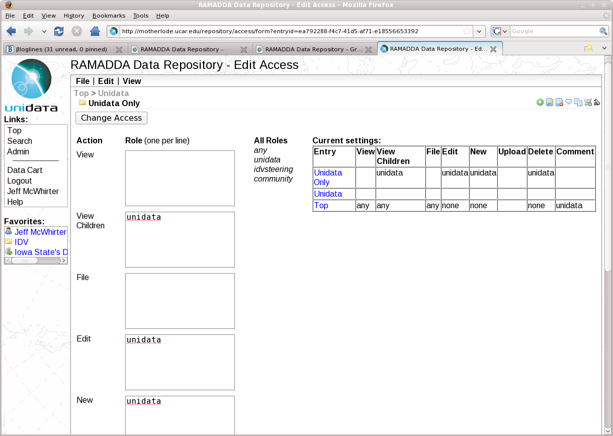

6 Entry Access Control
You can define access control settings under the "Edit -> Access" menu for an entry.
Image 1: Entry Access Control
The access control mechanism in RAMADDA is centered around a set of access types (e.g., viewing, new, edit)
and a set of roles and/or users that have permissions to do those tasks.
On the left of this form lists each of the access types. Under each access type
is a field where you can enter a user role (one per line).
On the right shows a summary table for the paricular entry we are viewing. This shows the access control
settings for all of the ancestor folders of the entry and allows the user to see just what access settings
are applicable to the entry.
6.0 Access Types
The different access types are:
6.1 Roles
Each access type form entry can contain any number of roles (one per line).
- User roles - All users can have one or more roles. This is set by the site administrator
when editing the user. They are just string names.
- Self identity role - If you enter a role in the form as user:someuserid this grants
access to that specific user.
- any - this is a special role and says that anyone can do the action.
- none - nobody (except admins) can do the action.
- ip:ip address - This format grants access to incoming requests with the given ip address or ip address suffix.
For example, ip:128.117 would grant access to any request coming from UCAR's network.
- !some role - Prefixing a role with "!" is a way to deny specific access to a user, role, or ip address.
For example, !ip:128.117 would deny access to any request coming from UCAR's network.
{kind=link}